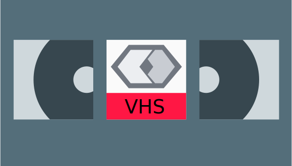

VHS: videojs-http-streaming
Sources
Representations
Options
Load a URL
Source URL
Url
Source Type (uses url extension if blank, usually application/x-mpegURL or application/dash+xml)
Type
Optional Keystems JSON:
keySystems JSON
Load
Load a Source
Representations
Representations
Options
Minified VHS (reloads player)
Synchronous Web Workers (reloads player)
Enable the live UI (reloads player)
Debug Logging
Muted
Autoplay
[EXPERIMENTAL] Enables support for ll-hls (reloads player)
[EXPERIMENTAL] Use Buffer Level for ABR (reloads player)
[EXPERIMENTAL] Use exact manifest timings for segment choices (reloads player)
[EXPERIMENTAL] Use the Pixel difference resolution selector (reloads player)
Override Native (reloads player)
Mirror sources from player.src (reloads player, uses EXPERIMENTAL sourceset option)
Preload (reloads player)
auto
none
metadata